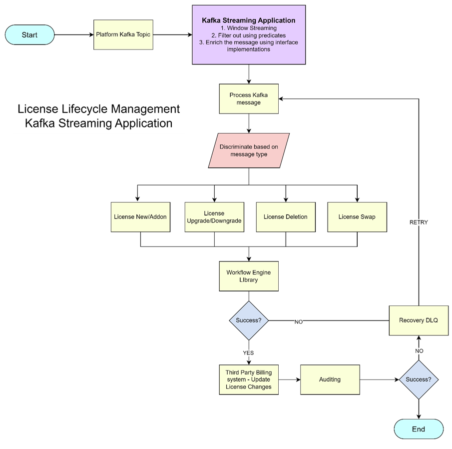

Manage customer licenses using a Kafka Streaming application. Uses Redis and Caffeine
- This project is little advanced as it uses Kafka streaming and Kafka messaging technologies along with redis and caffeine caching wherever is necessary. It also houses factory and strategy interface design patterns to achieve efficient and clean code.
- Customers uses the VoIP packages and services that we offer, most of the customers are of contact-center based, so they will have multiple users using cloud based voice services, PBX systems and more.
- So, customers usually buy a lot of connections to accommodate all their users. For example 500 SKU A’s and 200 SKU B’s. And each SKU has its own capabilities.
- These services that customer uses will be provisioned by the platform which provides licenses for each different service that customer bought.

- Also, whenever there is a change in these licenses like adding more licenses, removing, upgrade/downgrade, swapping license capabilities etc., platform provides us the Kafka messages to a specific topic.
- Usually there will be thousands of messages each minute and processing all of them will not be efficient. Also we don’t actually need to process all of these messages, so we use Kafka streaming application to process messages at the end of each time window and manipulate that message before further processin